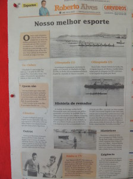

- Um belo texto de Gabrielli Zanca sobre a origem do Remo em Florianópolis – “O primeiro clube foi fundado por ilustres moradores da ilha, em 1903, o Clube de Regatas 29 de Abril…“. Leia a obra completa clicando em: A Prática do Remo em Florianópolis
- Relato de Carina Sartori sobre a fundação dos três clubes de remo da Capital – “O certo é que no dia 31, do mesmo mês nos salões do Clube Concórdia, reuniram-se… para fundar o Clube Náutico Francisco Martinelli. Carregando o pavilhão na cor encarnada e âncora preta no peito a “família martinellina”, como muitos se referiam aos que se associaram ao encarnado, abrigaria-se num barracão situado no terreno do Sr. Garcia, na Praia do mesmo Senhor, nas proximidades da Rua da Praia de Fora“. Leia a obra completa clicando em: A FLORIANÓPOLIS QUE CAMINHO: DIÁLOGOS ENTRE A CIDADE E O REMO
- Abaixo segue texto publicado no Diário Catarinense de 30/07/2005 em homenagem aos 90 anos de fundação do Clube. A iole Irajá foi o primeiro barco do Martinelli e proporcionou ao clube sua primeira vitória em 1918:

- Primeira Regata de Remo de Santa Catarina: “Em 17 de novembro de 1861, em Desterro (Florianópolis desde 01/10/1894), capital da Província de Santa Catarina, a recém-fundada Sociedade de Regatas realizou, na Enseada do Menino Deus, um páreo náutico com cinco disputas em escaleres e uma em baleeiras para amadores, menores, aprendizes de marinheiros e profissionais, como noticiaram os jornais da cidade.” (fonte: Remando nas Águas da História – Maury Dal Grande Borges)
- Roberto Alves, conceituado comentarista esportivo, publicou no dia 18/11/2012 a matéria abaixo contendo importantes fatos relacionados a história do remo catarinense.

Nosso Melhor Esport
- Quadro em homenagem a participação dos atletas do Martinelli no Campeonato Brasileiro de Remo de 2015, ano de comemoração do Centenário do Clube. Dentre as várias medalhas conquistadas, destaque para o título de Campeão Brasileiro na categoria Four Skiff Sênior Masculino, barco formado por Marco Moreira Martins, Lucas de Paula Setúbal, Anderson Nocetti e Ricardo Brüggmann Mühle.

- Guarnição do four skiff do Martinelli Campeã Sulamericana. Prova disputada no Peru em 1998. Gibran Vieira da Cunha, João Carlos Gonçalves, Edson Altino Pereira Júnior e Edson Aquino dos Santos.

- Marcelo Scherer, Adriano Teixeira, André Baracuhy, Gibran Vieira da Cunha e o timoneiro Rodrigo Saito, permaneceram no Japão durante 90 dias no ano de 1994, participando do ciclo de regatas. No páreo de 4 com timoneiro, venceram todas as provas, remando com a camisa do Shake Hand, uma empresa prestadora de serviços. Destaque para a regata final All Japan Regata, quando a agremiação rubro-negra venceu a guarnição olímpica japonesa, impressionando os dirigentes e atletas da terra do sol nascente.
- Foto com a família Soares. Foram anos de dedicação ao Martinelli, primeiramente como atletas e depois como diretores.

- Guarnição martinellina oito com timoneiro (8+) campeã da Prova Internacional A. Castro Júnior disputada em Porto Alegre/RS em 25 de Outubro de 1970. O Martinelli derrotou o União de Porto Alegre por uma diferença de dois barcos. Esse triunfo ganha maior destaque porque a guarnição gaúcha havia conquistado o título nacional.

- 1965 – Festividades em comemoração aos 50 anos do Martinelli. Detalhes do interior da antiga sede localizada na rua Antônio Luz, no centro de Florianópolis.


- Grandes campeões do Martinelli, Manoel Silveira e Valmor Vilela, fazem parte da lembrança dos frequentadores do clube através deste quadro que registra os feitos heróicos nos anos de 1953 e 1954.

- Guarnição martinellina campeã do 1º Campeonato Catarinense de oito com timoneiro (8+) disputada em 14 de Novembro de 1954.

- Chegada da prova de quatro com timeoneiro (4+) Estreantes, disputada em 14 de Junho de 1953.